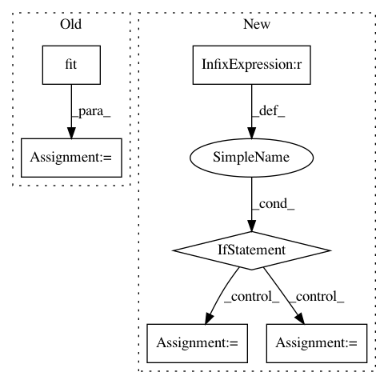

cdb5e9305ddcac7940caa9ee7532b80fa2f8c183,Orange/projection/manifold.py,MDS,__call__,#MDS#Any#,60
Before Change
dist_matrix = Euclidean(X)
if self.init_type == "PCA" and self.init_data is None:
self.init_data = torgerson(dist_matrix, self.params["n_components"])
clf = self.fit(X, Y=Y)
clf.domain = domain
return clf
def fit(self, X, Y=None):
After Change
if self.init_type == "PCA" and self.init_data is None:
init_data = torgerson(dist_matrix, params["n_components"])
elif self.init_data is not None:
init_data = self.init_data
else:
init_data = None
params["dissimilarity"] = dissimilarity
mds = self.__wraps__(**params)
mds.fit(X, y=Y, init=init_data)
In pattern: SUPERPATTERN
Frequency: 3
Non-data size: 6
Instances
Project Name: biolab/orange3
Commit Name: cdb5e9305ddcac7940caa9ee7532b80fa2f8c183
Time: 2017-05-12
Author: ales.erjavec@fri.uni-lj.si
File Name: Orange/projection/manifold.py
Class Name: MDS
Method Name: __call__
Project Name: metric-learn/metric-learn
Commit Name: 130cbadff294b686e466d430f26b2d069f6bbf59
Time: 2019-06-07
Author: 31916524+wdevazelhes@users.noreply.github.com
File Name: metric_learn/mlkr.py
Class Name: MLKR
Method Name: fit
Project Name: nipy/dipy
Commit Name: 7885c7f254146ca7a78a6a0b50165e1f12ad529a
Time: 2016-06-24
Author: shahnawaz.ahmed95@gmail.com
File Name: dipy/reconst/ivim.py
Class Name:
Method Name: two_stage